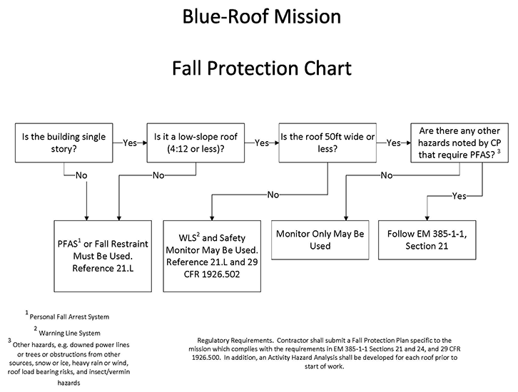

APPENDIX B
Emergency Operations
B18–B19
18. Mishap Reporting.
- All mishaps (near-miss, incident or accident) shall be reported in accordance with AR 385-10 and applicable supplements.
- Contractor motor vehicle mishaps occurring on public highways shall be reported for trend analysis only and shall not be considered recordable.
- The RFO SOH Manager will report mishap experience during emergency operations by maintaining an onsite accident log and by creation of a Preliminary Accident Notification (PAN) in ENGLink under the event name for all recordable accidents. This information, as well as information regarding unsatisfactory SOH performance and/or unresolved SOH problems, will be periodically reported to the USACE National Program Manager for SOH Emergency Planning and Response.
19. Variances to Safety and Health Requirements. The on-site RFO SOH Manager may recommend variances to the requirements contained within this manual to the Geographic District SOHO.
- The Geographic District SOHO must review the request, concur or non-concur. Geographic District SOHOs will exercise prudent judgment in their recommendations for granting variances with due consideration of existing disaster conditions.
- The recommended variance is then coordinated with the KO/COR for concurrence and then given to the RFO Commander for approval.
- The RFO Commander shall have the authority to approve or disapprove requests for variances.
- All variances granted must be copied to Division and HQ SOHO immediately for information only. The variances approved by the RFO Commander will expire at the end of the emergency operation mission.
FIGURE B-1
Blue-Roof Mission – Fall Protection Chart

{kind=link}